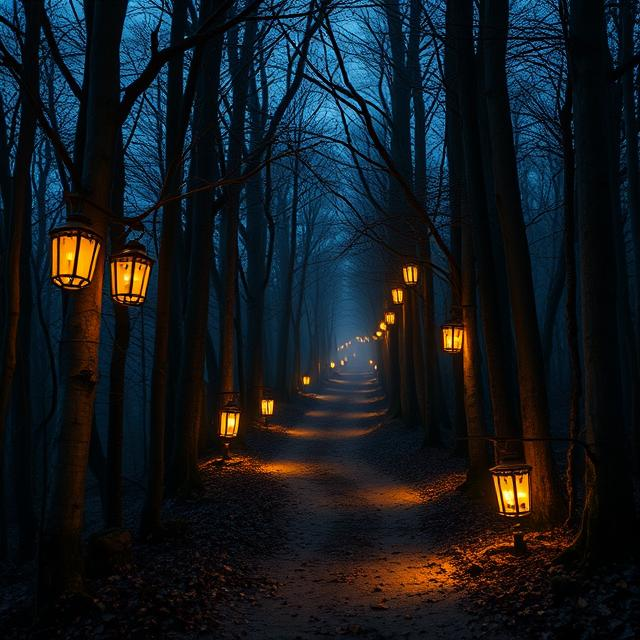

Our Experiences

The Witch’s Path
A classic Blair Witch-inspired trail through the haunted woods with hidden clues and creepy encounters.
Immerse yourself in a horror experience like no other. Solve the puzzles, survive the forest, escape the legend.
Discover Now
A classic Blair Witch-inspired trail through the haunted woods with hidden clues and creepy encounters.
Inspired by Alsatian witch legends and horror films, we take escape games to the next level — outside, in the eerie depths of the forest. With live actors, special effects, and interactive storytelling, we promise you an adventure you won’t forget.
Email: contact@haxa-escape.com
Phone: +33 6 00 00 00 00
Address: La Forêt Maudite, Alsace